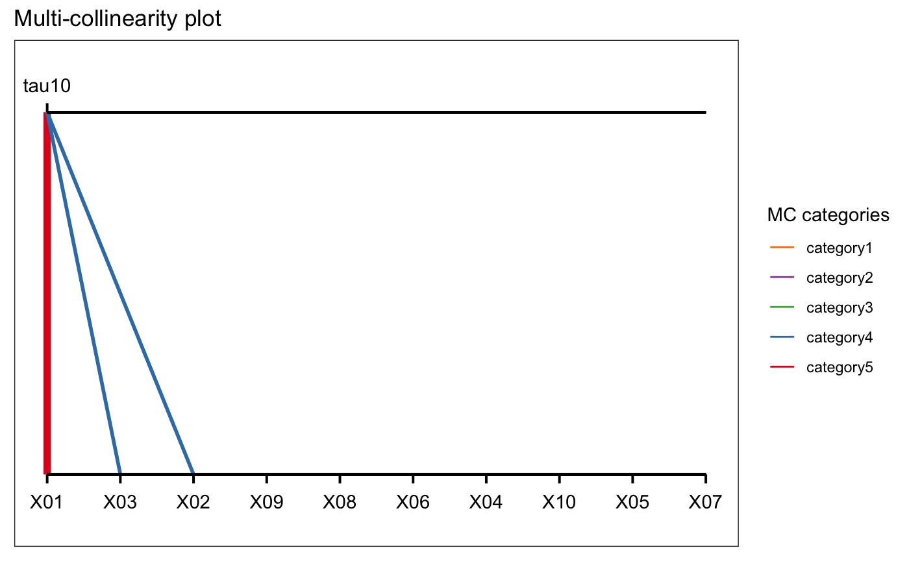
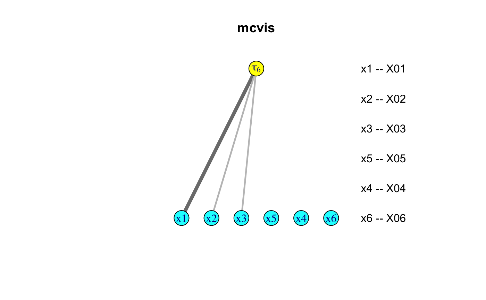

mcvis.RmdThe mcvis package is a methodology that informs on multi-collinearity in linear regression. The mcvis method derives its own statistic (the MC-index) and measures the strength of association between variance inflation factors and eigenvalues. That is, it investigates which column(s) in the design matrix explain instability when inverting the \(X^\top X\) matrix.
Suppose that we have a simple scenario that two predictors are highly correlated. This high correlation is a potential cause of multicollinearity which could cause problems in terms of very large variances of estimated model parameters in linear regression.
library(mcvis) set.seed(1) p = 10 n = 100 X = matrix(rnorm(n*p), ncol = p) X[,1] = X[,2] + X[,3] + rnorm(n, 0, 0.1) mcvis_result = mcvis(X) ggplot_mcvis(mcvis_result)

mplot packageIn practice, collinearity may not be solely caused by a single pair of highly correlated variables. In the mplot package, a simulated data was created with each of its column being a linear combination of other columns. In this case, the cause of the collinearity is not clear from the correlation matrix.
The mcvis visualisation plot identified that the 8th variable is the main cause of collinearity of this data. Upon consultation with the data generation in this simulation, we see that the x8 is a linear combination of all other predictor variables.
library(mplot) data("artificialeg") X = artificialeg[,1:9] mcvis_result = mcvis(X) igraph_mcvis(mcvis_result)

ggplot_mcvis(mcvis_result)
We also offer a shiny app implementation of mcvis in our package. Suppose that we have a mcvis object stored in the memory of R. You can simply call the function shiny_mcvis to load up a Shiny app.
shiny_mcvis(mcvis_result)
sessionInfo() #> R version 4.0.0 (2020-04-24) #> Platform: x86_64-apple-darwin17.0 (64-bit) #> Running under: macOS Catalina 10.15.4 #> #> Matrix products: default #> BLAS: /Library/Frameworks/R.framework/Versions/4.0/Resources/lib/libRblas.dylib #> LAPACK: /Library/Frameworks/R.framework/Versions/4.0/Resources/lib/libRlapack.dylib #> #> locale: #> [1] en_US.UTF-8/en_US.UTF-8/en_US.UTF-8/C/en_US.UTF-8/en_US.UTF-8 #> #> attached base packages: #> [1] stats graphics grDevices utils datasets methods base #> #> other attached packages: #> [1] mplot_1.0.4 mcvis_0.3.1 #> #> loaded via a namespace (and not attached): #> [1] tidyselect_1.1.0 xfun_0.14 purrr_0.3.4 #> [4] reshape2_1.4.4 lattice_0.20-41 colorspace_1.4-1 #> [7] vctrs_0.3.0 htmltools_0.4.0 yaml_2.2.1 #> [10] rlang_0.4.6 pkgdown_1.5.1.9000 pillar_1.4.4 #> [13] later_1.0.0 glue_1.4.1 RColorBrewer_1.1-2 #> [16] rngtools_1.5 doRNG_1.8.2 foreach_1.5.0 #> [19] lifecycle_0.2.0 plyr_1.8.6 stringr_1.4.0 #> [22] munsell_0.5.0 gtable_0.3.0 htmlwidgets_1.5.1 #> [25] codetools_0.2-16 psych_1.9.12.31 memoise_1.1.0 #> [28] evaluate_0.14 labeling_0.3 knitr_1.28 #> [31] fastmap_1.0.1 httpuv_1.5.2 parallel_4.0.0 #> [34] Rcpp_1.0.4.6 xtable_1.8-4 scales_1.1.1 #> [37] backports_1.1.7 promises_1.1.0 DT_0.13 #> [40] desc_1.2.0 mime_0.9 farver_2.0.3 #> [43] fs_1.4.1 mnormt_1.5-7 ggplot2_3.3.0 #> [46] digest_0.6.25 stringi_1.4.6 dplyr_0.8.5 #> [49] shiny_1.4.0.2 grid_4.0.0 rprojroot_1.3-2 #> [52] tools_4.0.0 magrittr_1.5 tibble_3.0.1 #> [55] crayon_1.3.4 pkgconfig_2.0.3 MASS_7.3-51.5 #> [58] ellipsis_0.3.1 shinydashboard_0.7.1 assertthat_0.2.1 #> [61] rmarkdown_2.1 iterators_1.0.12 R6_2.4.1 #> [64] igraph_1.2.5 nlme_3.1-147 compiler_4.0.0